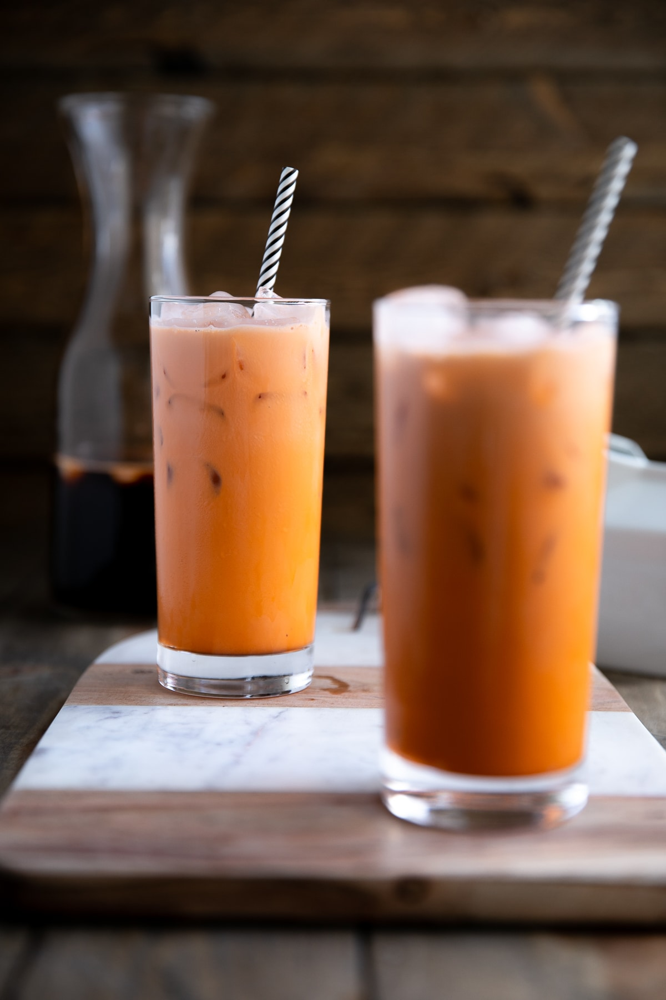

Thai Tea

Description
Thai tea is a sweetened drink that originated from Thailand and popularized there as well. Thai tea
is easily made using thai tea mix/leaves, sugar, water, half and half, and condensed milk.
Ingredients
- water
- thai tea mix/leaves
- cane sugar
- half and half
- condensed milk
Steps
- First, you need to measure about 8 cups of water and pour it into your pot.
- Second, boil the pot of water until bubbling.
- Next, pour your 1 1/2 cups of thai tea mix as well as your 1 1/4 sugar into the boiling water.
- Immediately, turn down heat to low-medium and begin stirring for 3 minutes.
- After 3 minutes, turn off heat and let your tea cool down for 20-25 minutes.
- Next, pour your tea through a strainer into a pitcher, then let it cool in refrigerator for 2-3 hours before serving.
- When serving, pour your tea about halfway of 2/5 of the glass and then use your half and half for another 2/5 of the glass.
Mix and taste, and add condensed milk as you see fit to get that sweet or not so sweet taste depending on your preferences.